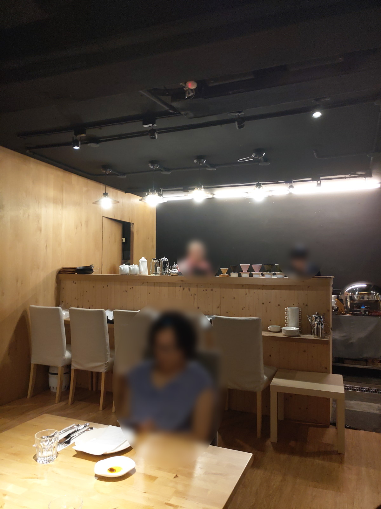
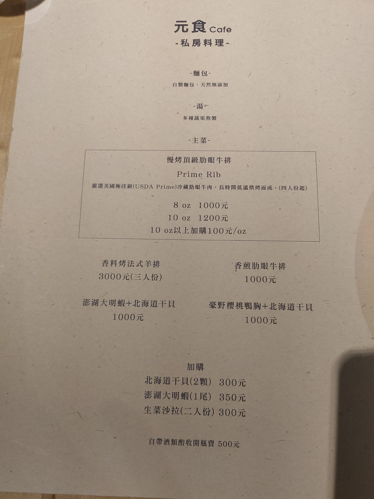
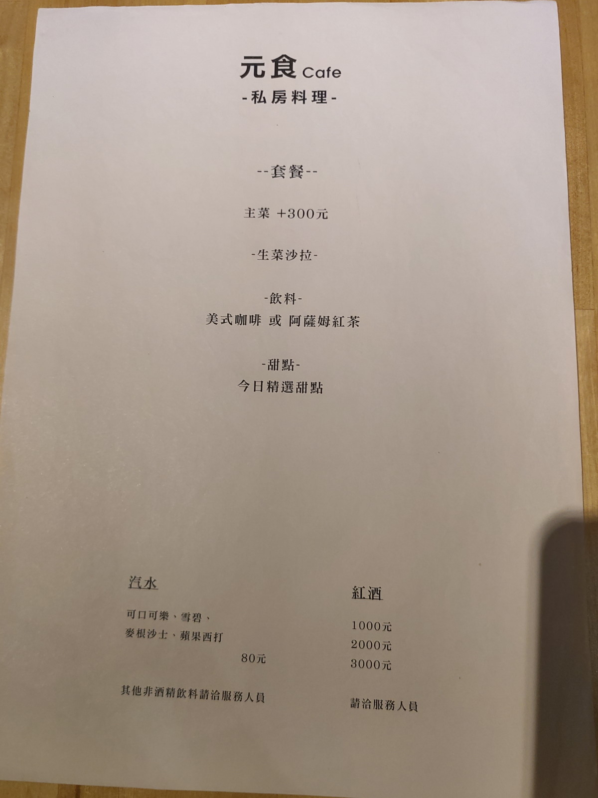
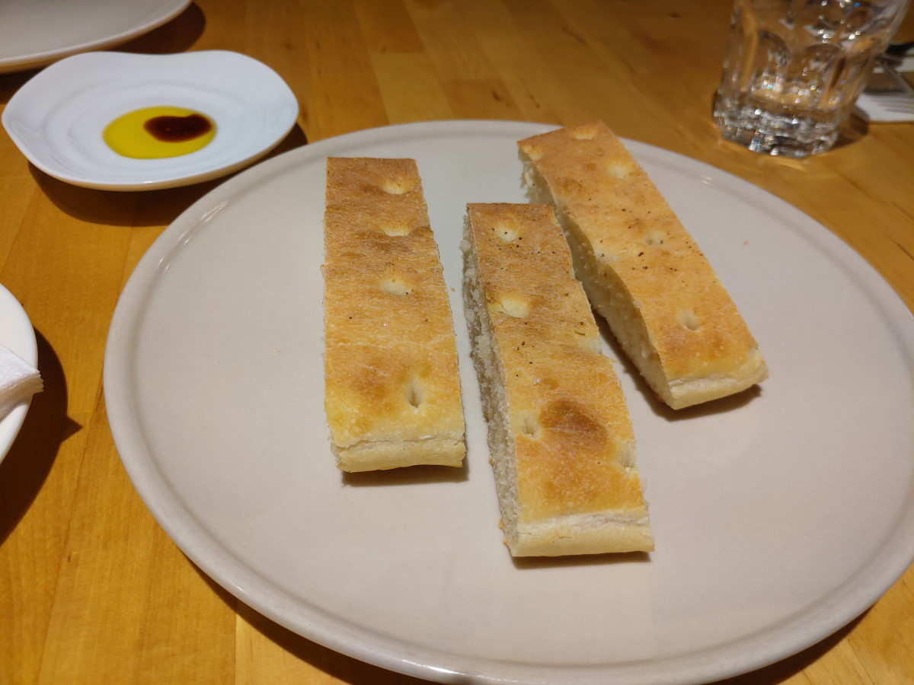
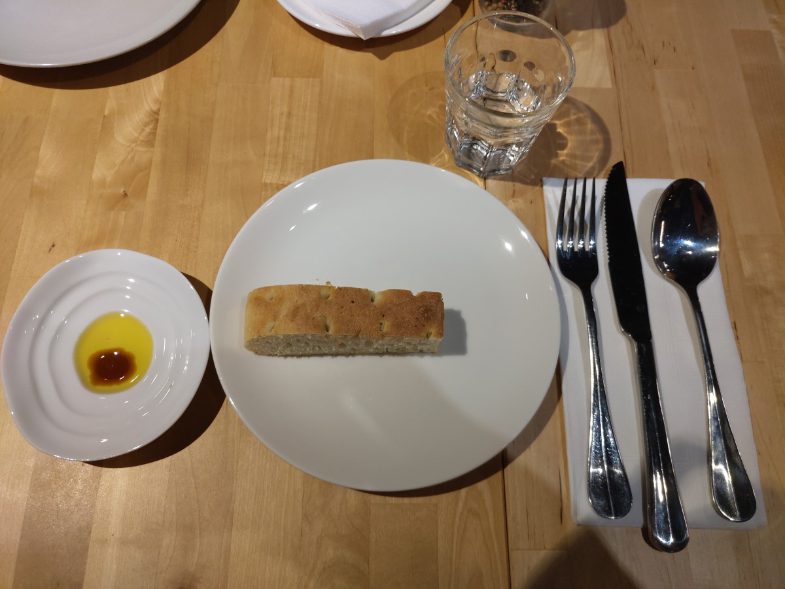
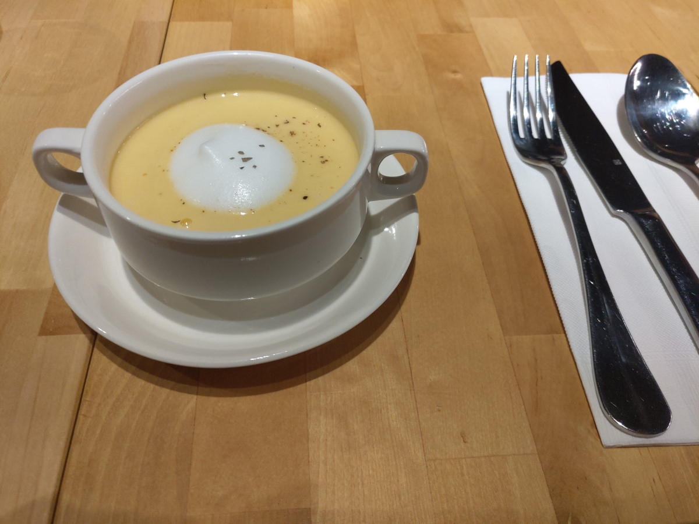
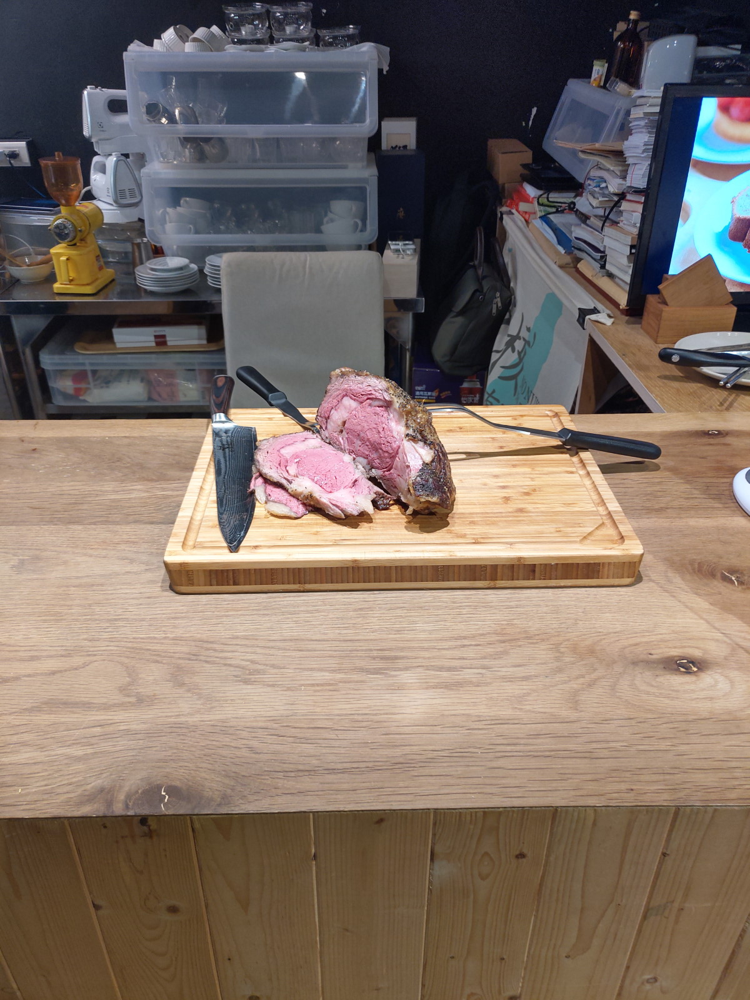
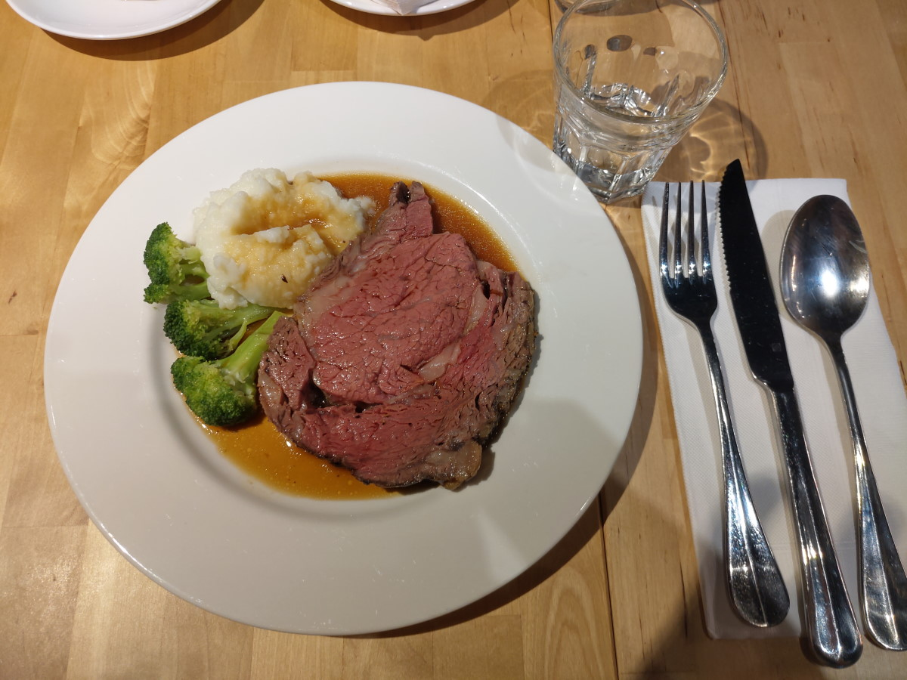
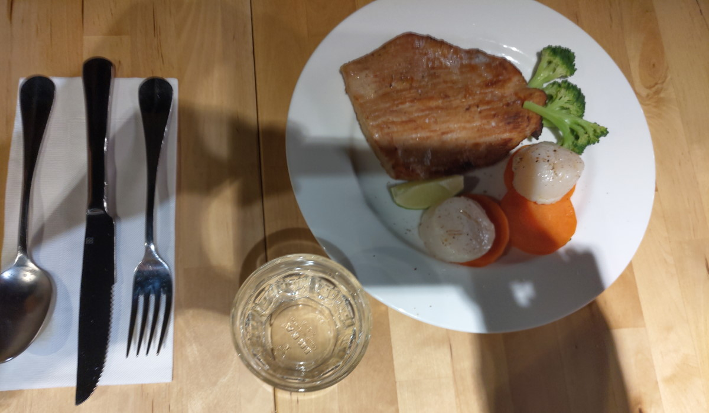
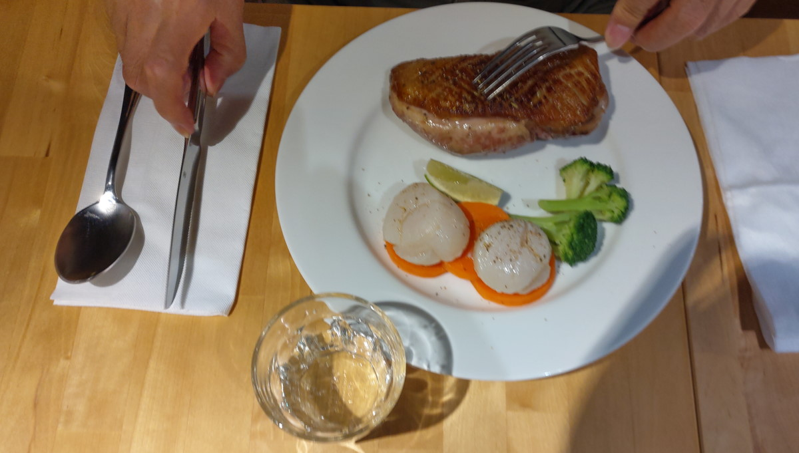

[台北] 元食cafe
| 餐廳名稱: | 元食cafe |
|---|---|
| 地 址: | 台北市逸仙路42巷17號 |
| 營業時間: | 週一 ~ 週五 12:00~18:00 |
| 週六 ~ 週日 公休 |
前一陣子常常看到元食cafe的廣告，號稱是慢烤頂級肋眼牛排-Prime Rib， 長時間低溫烘烤，鮮嫩多汁，感覺好像很厲害，正好今天要安排慶祝餐會， 就選了 元食cafe 來 試試看。車子停在國父紀念館的停車場，悠閒地走過去不到10分鐘， 還算方便。
這家餐廳是預約制，所以營業時間也沒那麼嚴格，訂位時餐廳同意 在星期六晚上用餐，來門口才發現寫著週六日公休，進去一看原來 另一組客人也差不多是六、七人，一個晚上能做十幾個人的生意， 應該是蠻值得破例開門營業的。
室內裝潢還算是簡約大方。吧檯後面就是廚房作業區。 
菜單很簡單，而且預約時，就要選好了。不吃牛的有豬排、鴨胸可以選擇。  
第一個上的是麵包，一人一塊麵包，烤的酥酥的。  
湯是奶油蘑菇湯，很正常。 
這時候，服務生請我們去看那塊慢烤的牛肉，似乎很厲害的樣子，肉外表全熟， 中間仍維持粉嫩但沒有血水一大堆。 
此時可選擇是否還要煎一下，我記得廣告都說他呈現了肉的原味，就選擇不煎， 這次來吃吃食物原味。 牛肉是很軟嫩，看起來食材本來就用好的牛肉， 加上慢烤，但是重口味的我，覺得不夠鹹，加了很多鹽。同時也後悔不煎一下， 可以多一個焦香味。 
豬排 加 大干貝。 
鴨胸 加 大干貝。 
Well…… 看那些廣告，好像很有氣勢，喜歡食物原味的應該會愛這間，但我就是個重口味的人， 試這麼一次就好。